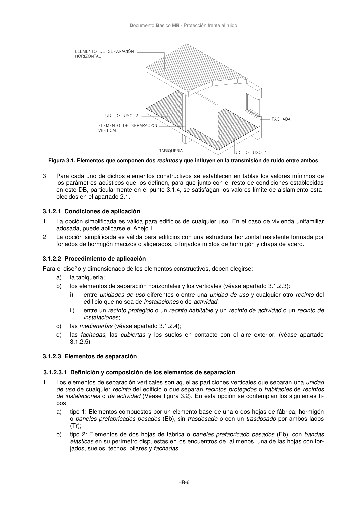

DB-HR Protección frente al ruido · edición 2019-12-20 · capa oficial
Documento DB-HR-oficial · SHA-256 del PDF a67baeca5138bb1f121f797d23a79a4557bd9ac4abacd954024893e05411eeab
Copia fiel del PDF fuente · Fuente oficial
Ficha de la disposición en la fuente oficial
Formatos: JSON del segmento · Markdown
3.1.2 Opción simplificada: Soluciones de aislamiento acústico 1 La opción simplificada proporciona soluciones de aislamiento que dan conformidad a las exigencias de aislamiento a ruido aéreo y a ruido de impactos. 2 Una solución de aislamiento es el conjunto de todos los elementos constructivos que conforman un recinto (tales como elementos de separación verticales y horizontales, tabiquería, medianerías, fa- chadas y cubiertas) y que influyen en la transmisión del ruido y de las vibraciones entre recintos ad- yacentes o entre el exterior y un recinto. (Véase figura 3.1). Documento Básico HR - Protección frente al ruido HR-6 Figura 3.1. Elementos que componen dos recintos y que influyen en la transmisión de ruido entre ambos 3 Para cada uno de dichos elementos constructivos se establecen en tablas los valores mínimos de los parámetros acústicos que los definen, para que junto con el resto de condiciones establecidas en este DB, particularmente en el punto 3.1.4, se satisfagan los valores límite de aislamiento esta- blecidos en el apartado 2.1.
